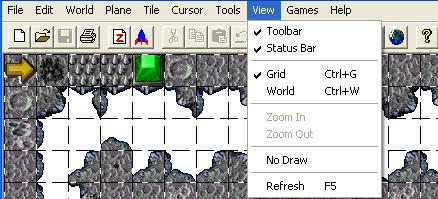

| View Menu  |
|---|
| Both Tile mode and Object mode |
| Toolbar (Checkmarked) |
| This feature when toggled will either hide or display the toolbar. |
| Statusbar (Checkmarked) |
| This feature when toggled will either hide or display the statusbar. Mouse position in pixelz, tile X/Y coordinatez, tile number, etc. |
| Grid (Ctrl+G) (Checkmarked) |
| This feature when toggled will either hide or display the grid. |
| World (Ctrl+W) |
| This 'feature' does not appear to do anything for Gruntz, either in the Menu Bar or the Tool Bar. |
| The following only exist in Object mode |
| Move Up (Up Arrow) |
| This feature will scroll the level in the desired direction. |
| Move Left (Left Arrow) |
| This feature will scroll the level in the desired direction. |
| Move Right (Right Arrow) |
| This feature will scroll the level in the desired direction. |
| Move Down (Down Arrow) |
| This feature will scroll the level in the desired direction. |
| Custom Move Up (Alt+Up Arrow) |
| This will move the selected object To Be Determined pixels in the desired direction. The number of pixels is determined by the Set Custom Move Values… feature. |
| Custom Move Left (Alt+Left Arrow) |
| This will move the selected object TBD pixels in the desired direction. The number of pixels is determined by the Set Custom Move Values… feature. |
| Custom Move Right (Alt+Right Arrow) |
| This will move the selected object TBD pixels in the desired direction. The number of pixels is determined by the Set Custom Move Values… feature. |
| Custom Move Down (Alt+Down Arrow) |
| This will move the selected object TBD pixels in the desired direction. The number of pixels is determined by the Set Custom Move Values… feature. |
| Set Custom Move Values… |
| This feature will specify the number of pixels that an object is moved when using Custom Move. It will open up a dialog box where you enter valuez for the four different directionz. The valuez were all '20' when I checked ... perhapz defaultz, perhapz something I set long ago. I now have them all set to '16' ... half a tile. |
| Both Tile mode and Object mode |
| Zoom In |
| Alwayz ghosted both in Menu Bar and Tool Bar ... this feature is not implemented. |
| Zoom Out |
| Alwayz ghosted both in Menu Bar and Tool Bar ... this feature is not implemented. |
| No Draw |
| This is self-explanatory. I think this feature was used for development only. |
| Refresh (F5) |
| This will redraw the screen. This is used for those rare cases when the display of your level seems messed up. Using refresh will usually fix any drawing/display problems. |